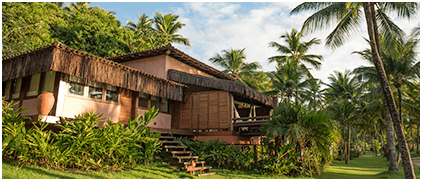

De Norte a Sul, o Brasil expressa sua cultura rica e diversificada. A miscigenada herança indígena, europeia e africana se apresenta em práticas religiosas, sabores e festas únicas. Uma experiência imperdível.
Localizado na América do Sul, o maior país do continente, abriga 5 grandes regiões. Entre elas, o Nordeste abriga o Estado da Bahia, onde está a cidade de Itacaré.
A Bahia foi a primeira a receber as embarcações portuguesas em território brasileiro. De lá, todo o país recebeu traços alegres e festeiros. Repleta de belezas naturais, construções históricas e festas folclóricas, o deslumbrante território baiano precisa estar no seu roteiro de viagem.
Com tanta diversidade, conhecer os melhores lugares da Bahia demanda alguns dias. Conheça o roteiro que preparamos para você com dicas de turismo pela costa baiana.
Confira também um programa de hospedagem no Txai Resort.
